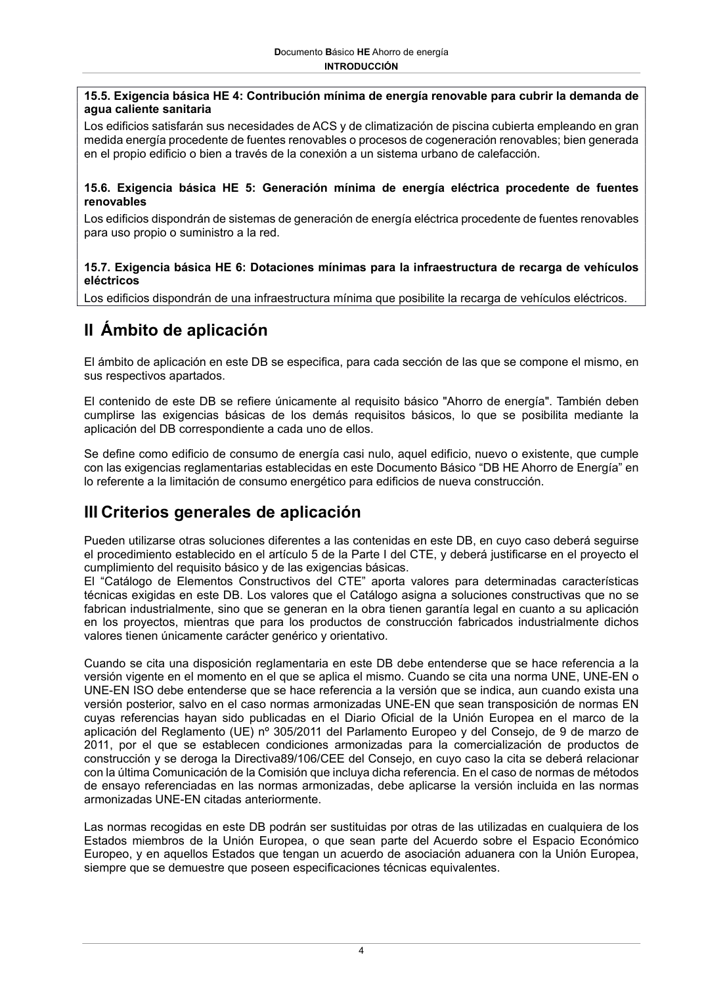

DB-HE · II Ámbito de aplicación · versión 2022-06-14 · capa oficial
Formatos: JSON compacto · Markdown · PDF fuente
Ámbito del documento · texto del ámbito · documento y tablas
ID técnico a0014 · PDF pág. 4 · jerarquía no validada por persona · contrastado con el literal de la página 4 (candidato tipográfico); no validado por persona · padre: raíz
II Ámbito de aplicación El ámbito de aplicación en este DB se especifica, para cada sección de las que se compone el mismo, en sus respectivos apartados. El contenido de este DB se refiere únicamente al requisito básico "Ahorro de energía". También deben cumplirse las exigencias básicas de los demás requisitos básicos, lo que se posibilita mediante la aplicación del DB correspondiente a cada uno de ellos. Se define como edificio de consumo de energía casi nulo, aquel edificio, nuevo o existente, que cumple con las exigencias reglamentarias establecidas en este Documento Básico “DB HE Ahorro de Energía” en lo referente a la limitación de consumo energético para edificios de nueva construcción.
1 referencias con forma DB se han ocultado por no cumplir la sintaxis oficial; la lista original sigue en el JSON.

PDF fuente redistribuible: copia fiel enlazada en esta página (SHA256 verificado).